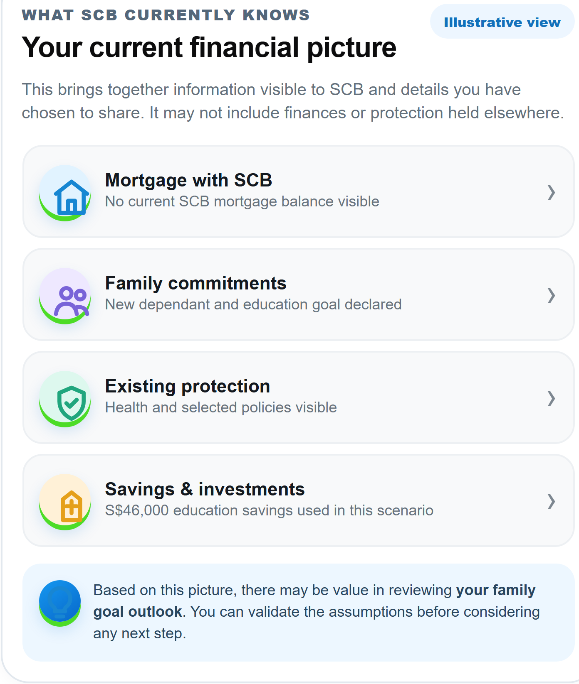
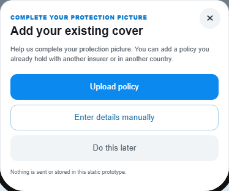

Relevant moments
Customer context can create a more meaningful reason to reach out.
V1.2 / POTENTIAL IMPACT
Help customers understand their protection picture, create more relevant moments for RM engagement, and carry relationship context forward as customers and RMs change.
See how protection relates to what matters.
Know what is clear — and what needs checking.
Choose to review, update or speak with an adviser.


Customer context can create a more meaningful reason to reach out.
Reviewed context can help an RM begin with what matters to the customer.
With customer agreement, digital exploration can inform the next conversation.
Useful understanding can stay with the relationship as people change.
The customer context should travel with the relationship — not disappear when the RM changes.The next RM can start with understanding, not from zero.
Potential outcomes to explore through a focused first increment.
Explore where customer context could prompt relevant outreach.
Give RMs customer-reviewed context to inform the discussion.
Bring protection into a broader wealth conversation, when useful to the customer.
Portfolio Intelligence could become a source of qualified conversations — not just another digital feature.
FROM CUSTOMER CONTEXT TO BUSINESS VALUE
COMMERCIAL SENSITIVITY
Illustrative improvement scenarios show why a measured change can matter across a large customer base.
Illustrative sensitivity — not a forecast. Monetary sizing requires an agreed SCB baseline and a defined outcome.
Whole-portfolio viewClearer context and a stronger starting point for an RM.
Possible-need promptA relevant moment to engage, subject to customer response.
Customer validationMore trusted, better-quality context.
“Not visible” labelFewer assumptions about what protection a customer has.
External policy uploadThe customer can help complete the picture.
Policy summaryLess effort to find and understand relevant details.
International contextConnect policy information to a real-life question.
Scenario explorationA more informed conversation about assumptions and choices.
Next-best conversationStart with a need before discussing a product.
RM handoffContinue with agreed context, without repeating the whole story.
THE OPPORTUNITY
The opportunity is not simply to sell more insurance — it is to make customer understanding reusable across the relationship.